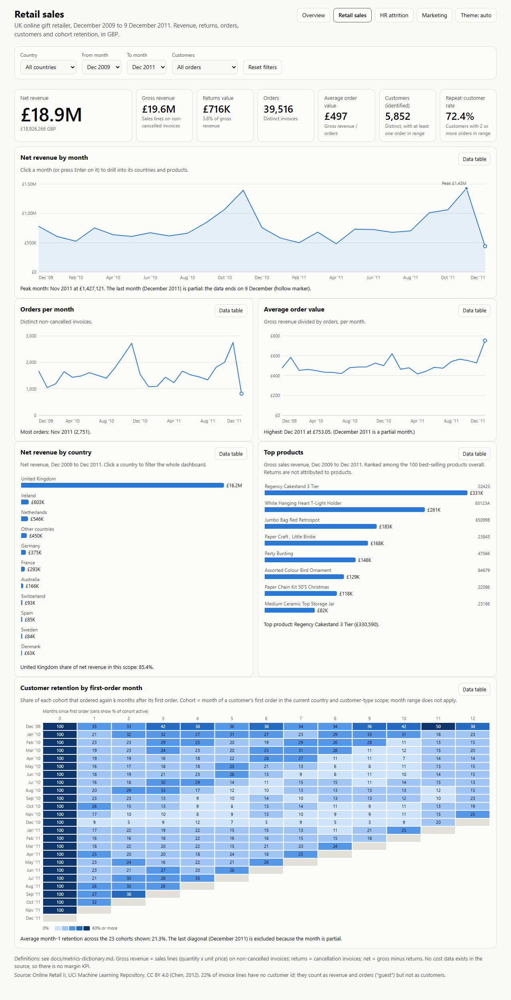
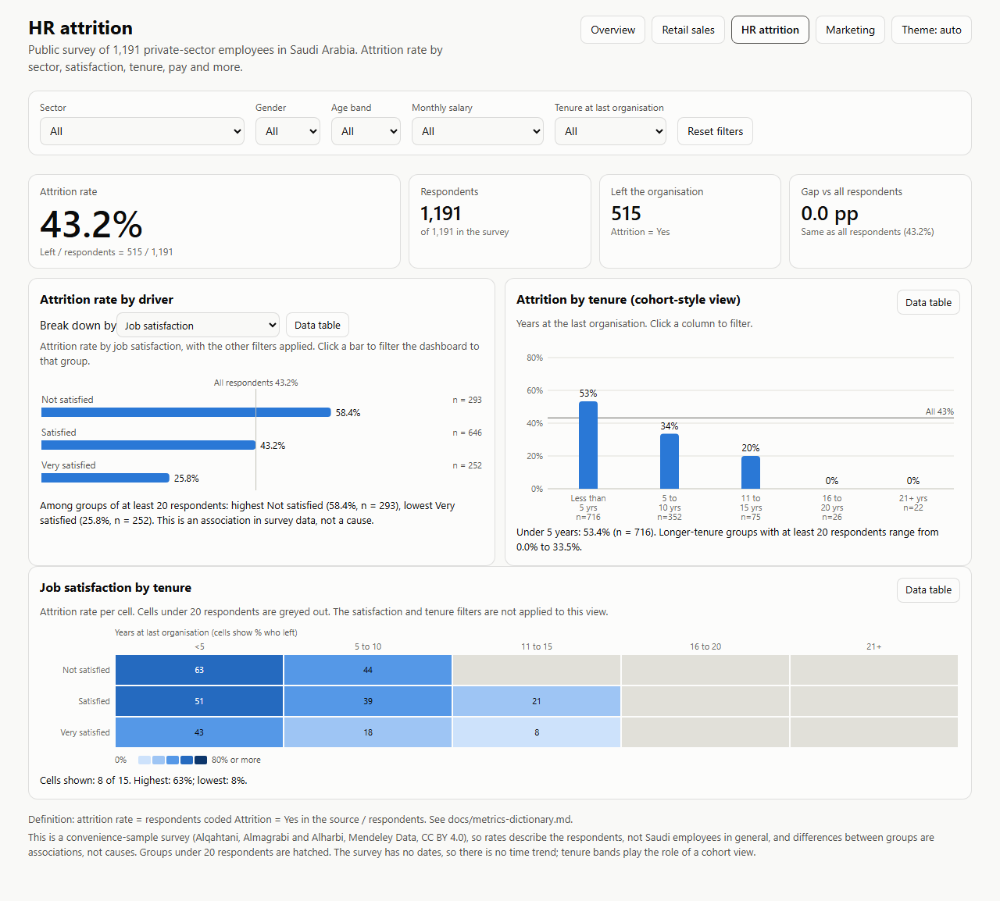
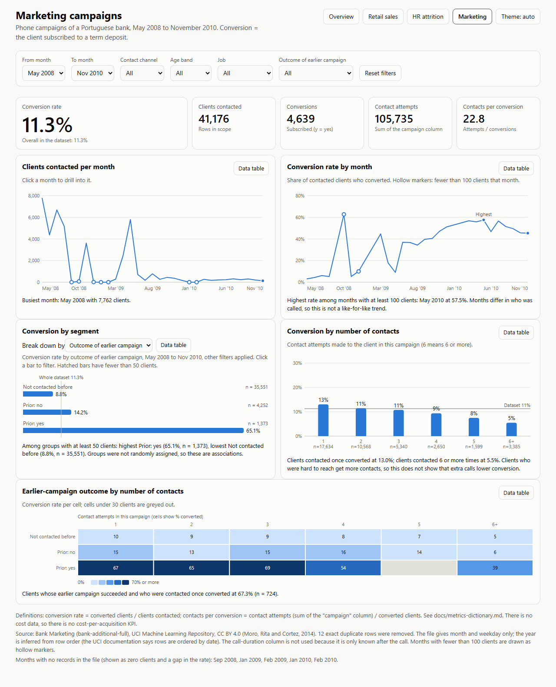

Retail sales
- Dataset:
- Online Retail II (UCI), 2009-2011, CC BY 4.0
- KPIs:
- net revenue, returns, orders, average order value, customers, repeat-customer rate, cohort retention

HR attrition
- Dataset:
- Saudi Employee Attrition survey (Mendeley Data), CC BY 4.0
- KPIs:
- attrition rate, respondents, leavers, gap versus all respondents

Marketing campaigns
- Dataset:
- Bank Marketing (UCI), 2008-2010, CC BY 4.0
- KPIs:
- conversion rate, clients contacted, contact attempts, contacts per conversion
These dashboards are open-tool implementations. Power BI and Tableau versions are not included in this repository; the step-by-step build guide and cleaned CSV exports for making them are in docs/build-in-bi-tools.md. Metric definitions are in docs/metrics-dictionary.md. Original work is licensed CC BY-NC-ND 4.0; the datasets keep their own CC BY 4.0 licenses (see THIRD_PARTY_NOTICES.md).